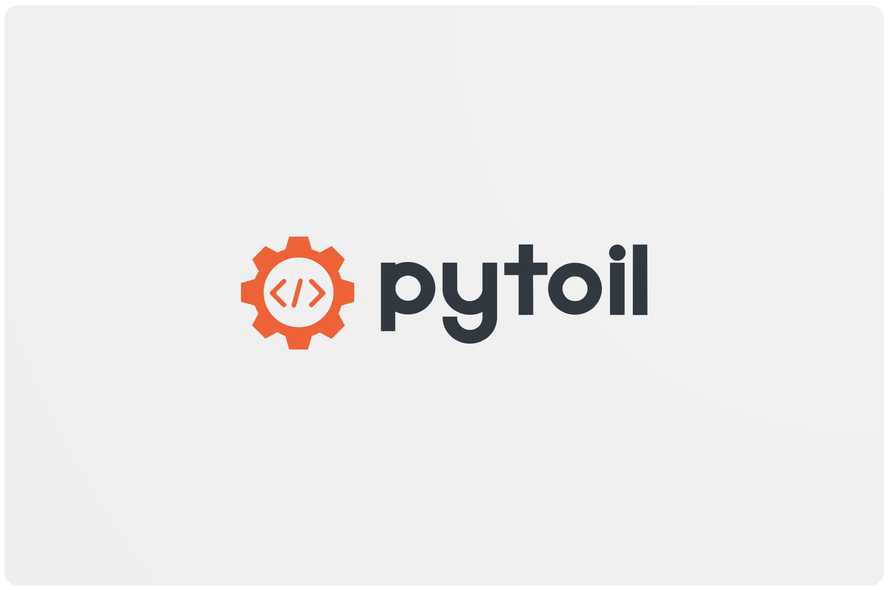

Home



pytoil is a small, helpful CLI to help developers manage their local and remote projects with ease!
-
Source Code: https://github.com/FollowTheProcess/pytoil
-
Documentation: https://FollowTheProcess.github.io/pytoil/
 pytoil is still in Alpha and as such, the API may change without deprecation notices.
pytoil is still in Alpha and as such, the API may change without deprecation notices.
What is it?¶
pytoil is a handy tool that helps you stay on top of all your projects, remote or local. It's primarily aimed at python developers but you could easily use it to manage any project!
pytoil is:
- Easy to use

- Easy to configure
- Safe (it won't edit your repos at all)
- Useful! (I hope
 )
)
Say goodbye to janky bash scripts 
Background¶
Like many developers I suspect, I quickly became bored of typing repeated commands to manage my projects, create virtual environments, install packages, fire off cURL snippets to check if I had a certain repo etc.
So I wrote some shell functions to do some of this for me...
And these shell functions grew and grew and grew.
Until one day I saw that the file I kept these functions in was over 1000 lines of bash (a lot of printf's so it wasn't all logic but still). And 1000 lines of bash is waaaay too much!
And because I'd basically hacked it all together, it was very fragile. If a part of a function failed, it would just carry on and wreak havoc! I'd have to do rm -rf all_my_projects... I mean careful forensic investigation to fix it.
So I decided to make a robust CLI with the proper error handling and testability of python, and here it is! 
Installation¶
As pytoil is a CLI program, I'd recommend installing with pipx
$ pipx install pytoil
---> 100%
Successfully installed pytoil
If you don't know what pipx is, go check it out! But basically it allows python CLI tools to be installed in their own sandboxed environments but you can still access the CLI as if it was installed globally!
You can always fall back to pip
$ python3 -m pip install pytoil
---> 100%
Successfully installed pytoil
Warning
keep in mind though, you'll have to install it globally for it to work so it might be better to use pipx
pytoil will install everything it needs in python to work. However, it's full feature set can only be accessed if you have the following external dependencies:
- git
- conda (if you work with conda environments)
- VSCode (if you want to use pytoil to automatically open your projects for you)
Quickstart¶
pytoil is super easy to get started with.
After installation just run
$ pytoil config
No config file yet!
Making you a default one...
This will create a default config file which can be found at ~/.pytoil.yml. See config for what information you need to put in here.
Don't worry though, there's only a few options to configure! 
After that you're good to go! You can do things like:
See your local and remote projects¶
$ pytoil show all
Local Projects:
- Project1
- Project2
- Project3
Remote Projects:
- Remote1
- Remote2
- etc..
See which ones you have on GitHub, but not on your computer¶
$ pytoil show diff
Remote projects that are not local:
- Projectyoudonthave1
- Projectyoudonthave2
Easily grab a project, regardless of where it is¶
$ pytoil checkout myproject
Resuming 'myproject'...
// Will now either open that project if local
// or clone it if not
// Ensure virtual environments are set up etc.
Create a new project and virtual environment in one go¶
$ pytoil create myproject --venv virtualenv
Creating project: 'myproject' at '/Users/you/projects/myproject'
Creating virtualenv for: 'myproject'
And even do this from a cookiecutter template¶
$ pytoil create myproject --venv virtualenv --cookie https://github.com/some/cookie.git
Creating project: 'myproject' with cookiecutter template: 'https://github.com/some/cookie.git'
// You'll then be asked all the cookiecutter questions defined in the template
// After which pytoil will take over and create the virtual environment as normal
Help¶
Like all good CLI programs, pytoil (aswell as all it's subcommands, and all their subcommands!) has a --help option to show you what to do.
$ pytoil --help
Helpful CLI to automate the development workflow.
- Create and manage your local and remote projects
- Build projects from cookiecutter templates.
- Easily create/manage virtual environments.
- Minimal configuration required.
Options:
-V, --version Display pytoil version.
--install-completion Install completion for the current shell.
--show-completion Show completion for the current shell, to copy it or
customize the installation.
--help Show this message and exit.
Commands:
checkout Checkout a development project, either locally or from GitHub.
config Display pytoil's configuration.
create Create a new development project locally.
docs Open pytoil's documentation in your browser.
gh Opens a specified project on GitHub in your browser.
info Show useful information about a project.
remove Deletes a project from your local filesystem.
show View your local/remote projects.
sync Synchronise your local and remote projects.
Info
pytoil's CLI is designed such that if you don't specify any arguments, it won't do anything! just show you the --help. This is called being a 'well behaved' unix command line tool.
This is true for any subcommand of pytoil so you won't accidently break anything if you don't specify arguments .
And if you get truly stuck, you can quickly open pytoil's documentation with:
$ pytoil docs
Opening pytoil's documentation in your browser...
// Now you'll be on this page in whatever your default browser is!